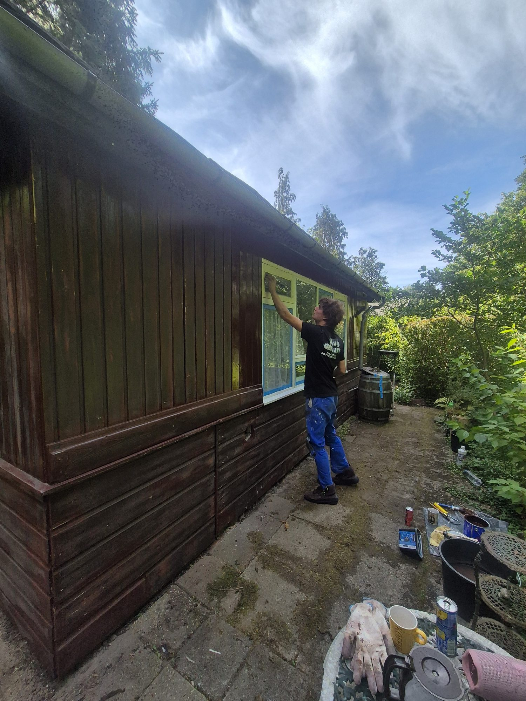
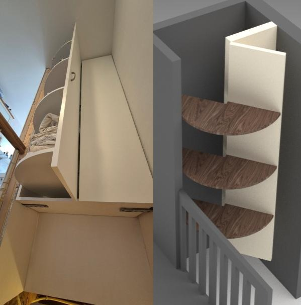
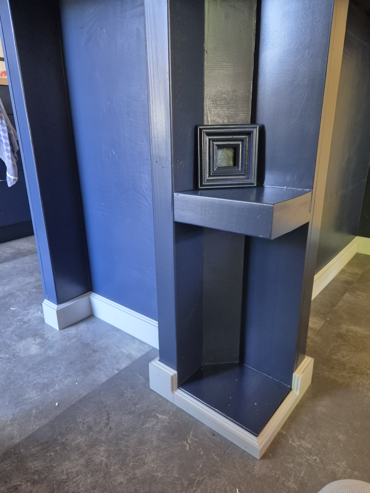
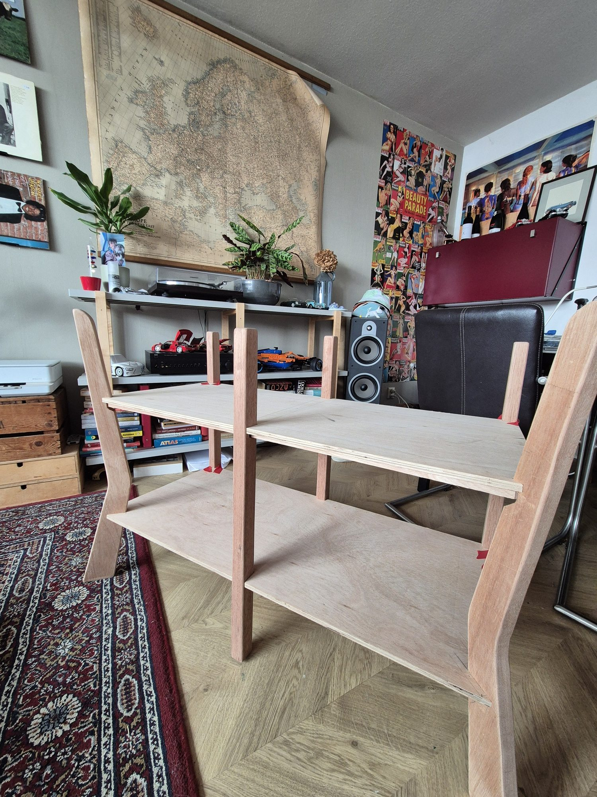
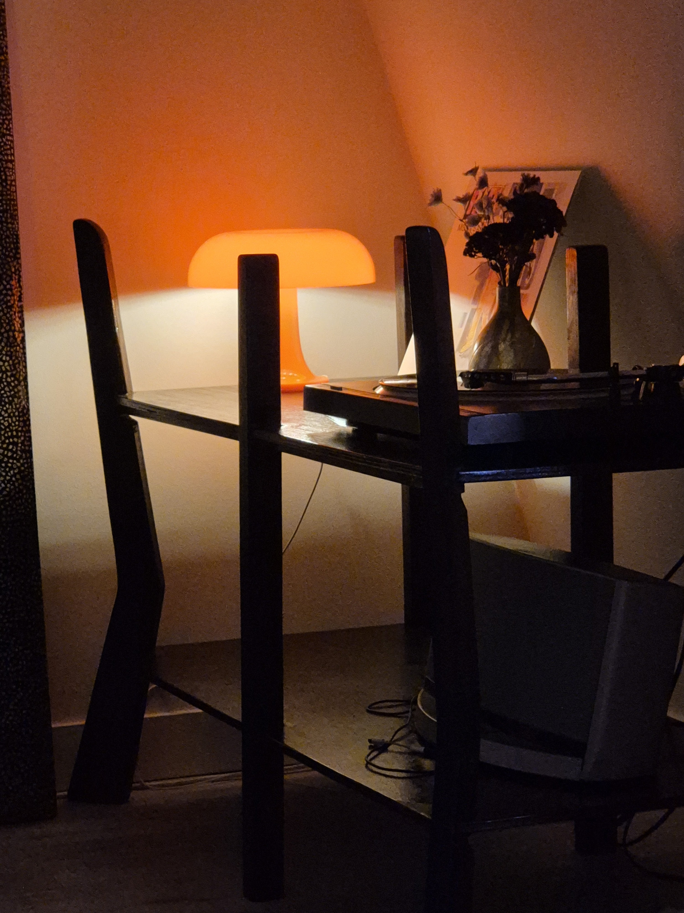
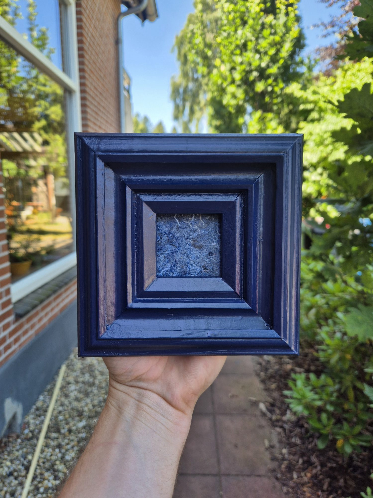
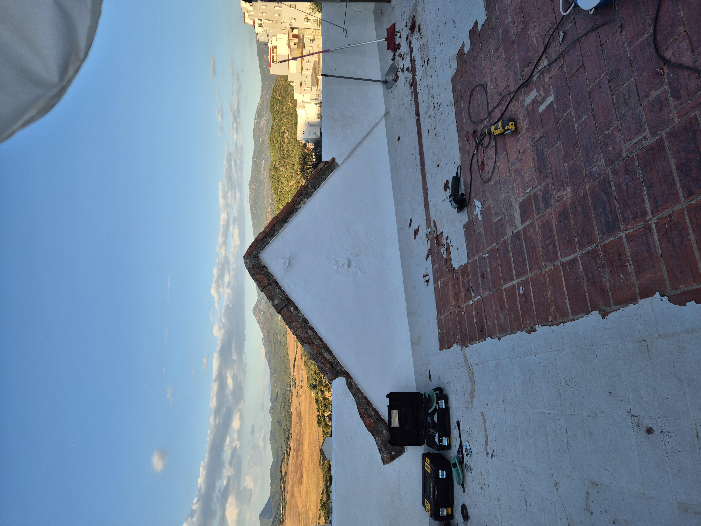
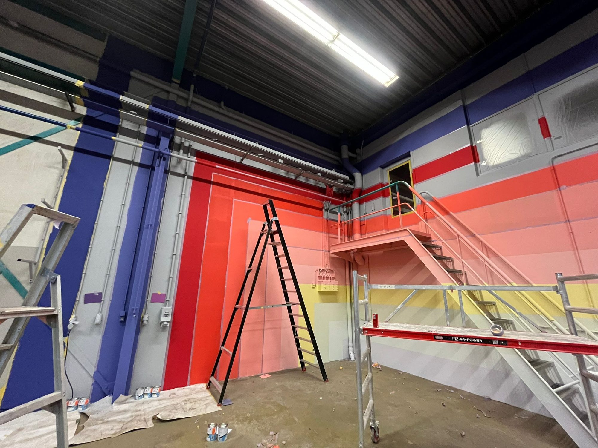

Exterior
Finished Garden Shed
Exterior finishing and practical site work for a garden shed. This space is set up so a longer project note can be added later.




Company
Practical jobs, custom interior solutions, furniture, repairs, and small build projects. I make clear plans and build them properly.
What I do
BM Klussenservice is for work where practical execution and detail both matter: a custom closet, kitchen finishing, repair work, or a small build that needs to fit a specific situation.


Approach
I prefer clear, durable solutions that fit the place they are made for. My product design background helps with planning and detail.

Recent work
Exterior
Exterior finishing and practical site work for a garden shed. This space is set up so a longer project note can be added later.

Structure
Separate shed structure work, shown from preparation through framing and cladding.


Interior
Small furniture build, photographed during construction and in warm mood lighting after placement.


Custom fit
Made-to-fit finishing around a non-standard kitchen shape, with attention to the edge detail and the existing interior.

Repair
Practical outside repair work handled on location.

Painting
Clean painting and preparation work for a workspace wall.
